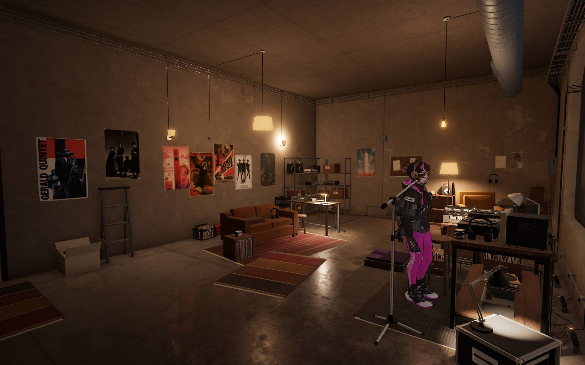
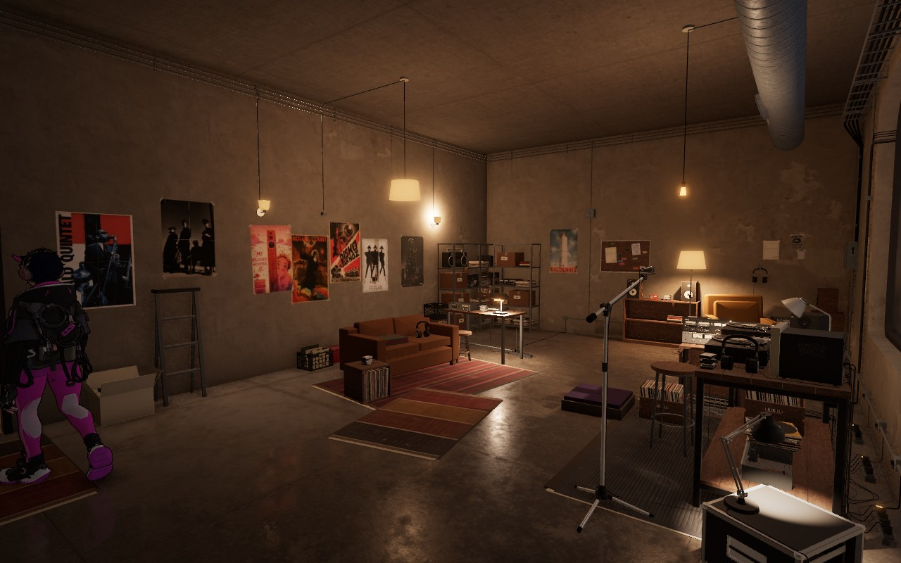
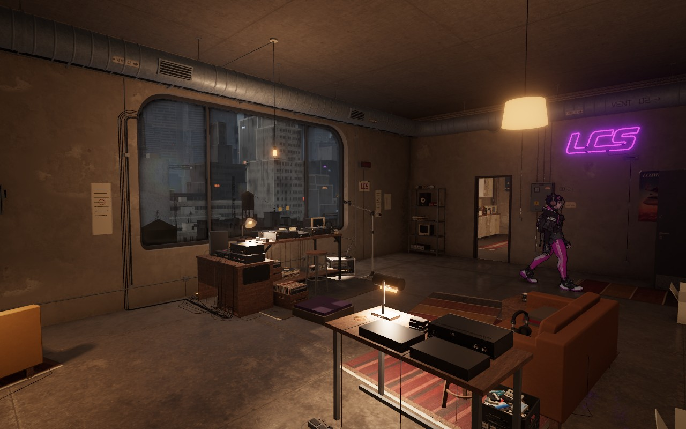
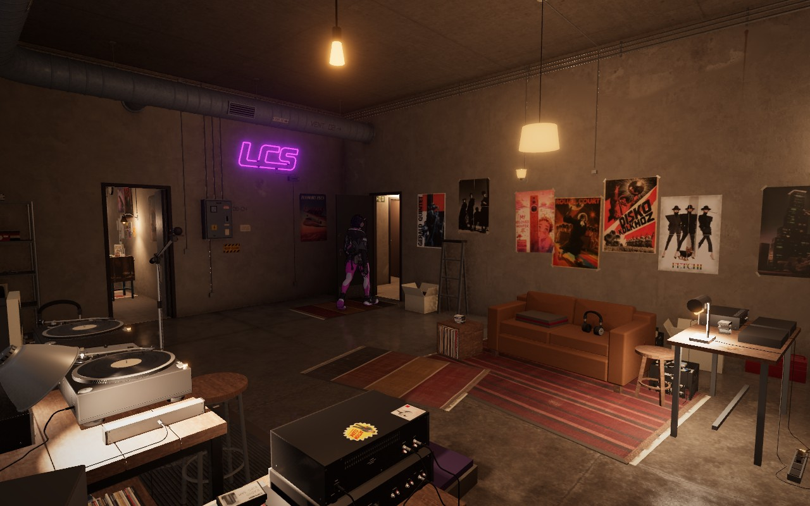
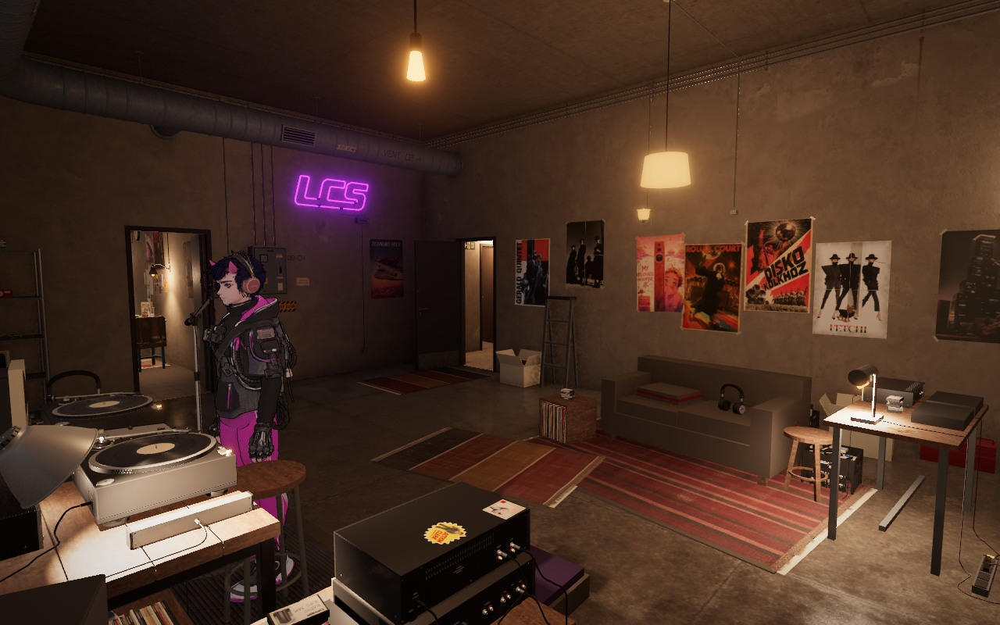
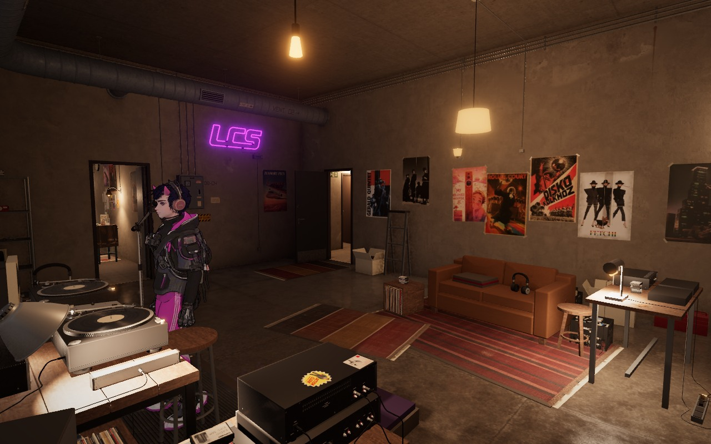
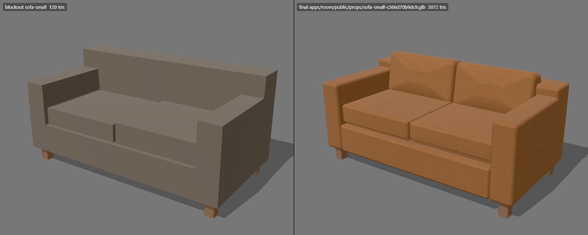
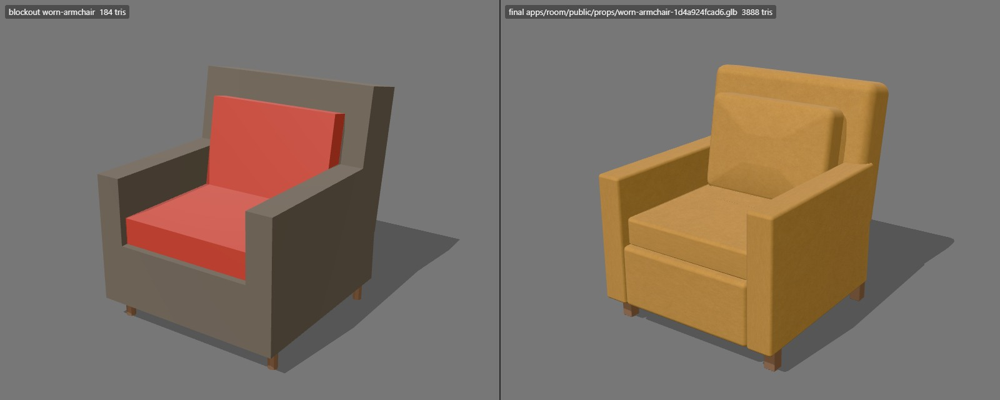
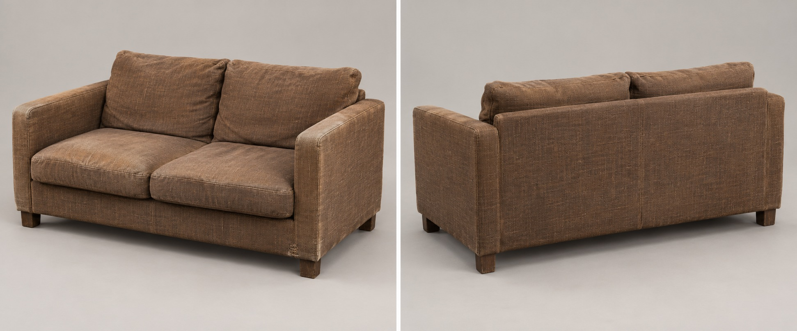
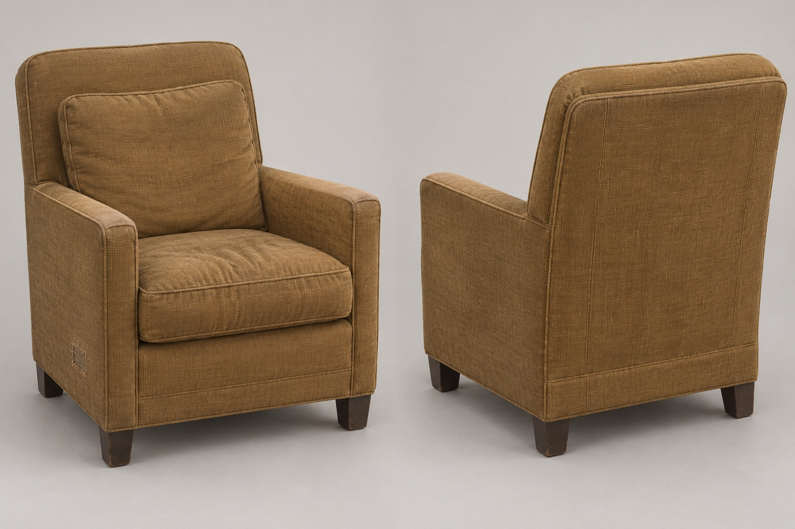

LCS · 11 October 2026
Vienna's main room
The DJ station already has its analog gear. This pass gives the listening and sorting corner more comfort, beginning with the large furniture shapes and then the stored records and tapes.
Sol implementation · Astra visual review
Pass 2 — a working record library
Twelve groups of records, tapes, books and cartons fill useful shelf pockets. Mixed volumes and gaps give the storage wall more weight without moving the furniture.

Previous checkpoint — sparse shelf volumes
Stock pass — deployed native room, 19:00Opposing views of the stock pass

Window / DJ station
DJ station / listening cornerPlacement follows suitable shelf surfaces, load limits and available space. Stock keeps its identity through furniture changes, waits when no shelf fits and resumes when one is available. All 760 saved owner placements are preserved, along with the preview’s four derived loot posters. No new textures. Sol implemented the rules; Astra accepted the room views. Lamp and character states differ between captures.
Stock verificationLive asset check
Pass 1 — softer seating
A recovered sofa and a collected armchair now have separate padded cushions, softened arms and quiet tobacco / ochre cloth. Existing footprints, carrying surfaces and procedural placements stay intact.

Before — rigid blockout seating
After — actual native room render, 19:00Two matching room angles
Window / DJ stationReverse / storage wall

Small sofa — 5,072 triangles · 50 KiB GLB
Worn armchair — 3,888 triangles · 39 KiB GLBGenerated construction concepts

Generated concept — direction for the sofa
Generated concept — direction for the armchairBoth assets passed 15 exporter checks and personal native GPU inspection. Astra accepted the final shapes and quiet cloth. Two 256px swatches use the existing atlas; existing public print pixels and other catalog records remain unchanged. Concept images show the intended construction; the room and material images show the implementation.